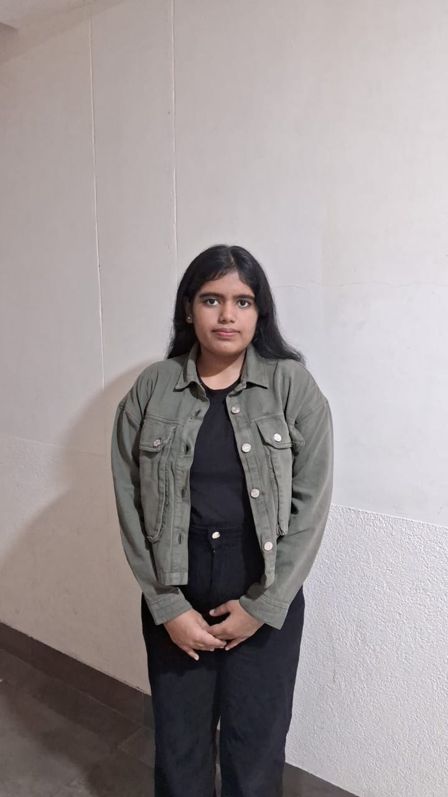

Kriti Sehgal

About me
Hi, I'm Kriti, a passionate first-year tech student with a keen interest in web development. I thrive on learning new technologies and applying them in real-world projects. Currently, I'm honing my skills in web dev and exploring opportunities in content creation and graphic designing.
Education
Thapar University,Patiala
- Seth hukam chand public school ,Jalandhar
12th cbse board
- Seth hukam chand public school ,Jalandhar
10th cbse board
-
Work experience
- Muskan NGO
I am currently volunteering at Muskan NGO as a graphic designer and content creator.
Osint Ambition
I am currently working as an intern at Osint Ambition as a graphic designer and content creator.
Hobbies
contact me